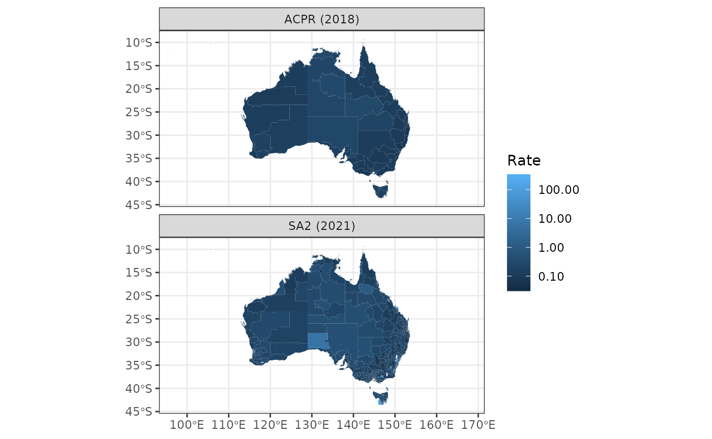

Advanced mapping with correspondence example - ACPR
Advanced-mapping-with-correspondence-example-ACPR.RmdCurrent problem
- The year is 2024.
- We want to map count data from SA2s (2021 edition) to Aged Care Planning Regions (ACPRs).
- There has been population growth in Australia since the 2021 census
population (which the
map_with_correspondence()uses by default for creating correspondence tables).
The plan
Use map_with_correspondence() but create a new
sf (POINT) object that incorporates the estimated
residential population projections (ERP) from 2023 at the SA2 level.
Since we don’t have mesh block population data from the ERP, this won’t
account for within-SA2-differences in population growth from 2021 to
2023, but it will account for differences in between-SA2-differences in
population growth.
sa2_erp23 # use ERP data at SA2 level from ABS <https://www.abs.gov.au/statistics/people/population/regional-population/latest-release#data-downloads>
#> # A tibble: 2,454 × 2
#> sa2_code_2021 erp
#> <chr> <dbl>
#> 1 101021007 4396
#> 2 101021008 8483
#> 3 101021009 11420
#> 4 101021010 5099
#> 5 101021012 12873
#> 6 101021610 7352
#> 7 101021611 17274
#> 8 101031013 2468
#> 9 101031014 6781
#> 10 101031015 3538
#> # ℹ 2,444 more rows
mb21_pop <- get_mb21_pop()
# create adjusted MB21 population data for creating correspondence table using ERP data at SA2 level
adj_mb21_pop <- mb21_pop |>
as_tibble() |>
select(MB_CODE21, sa2_code_2021 = SA2_CODE21, Person) |>
# create within-sa2 pop ratios for each mesh block
mutate(within_sa2_pp = Person / sum(Person), .by = sa2_code_2021) |>
# join the ERP (2023) at SA2 level
inner_join(sa2_erp23, by = "sa2_code_2021") |>
# apply SA2 level ERP to within-sa2 pop ratios to get adjusted pop at mesh block level
mutate(pop23 = erp * within_sa2_pp) |>
select(MB_CODE21, Person = pop23) |>
# join the POINT geometry back
(\(d) {
mb21_pop |>
select(MB_CODE21, sa2_code_2021 = SA2_CODE21) |>
inner_join(d, by = "MB_CODE21")
})()
adj_mb21_pop
#> Simple feature collection with 368172 features and 3 fields
#> Geometry type: POINT
#> Dimension: XY
#> Bounding box: xmin: 96.82008 ymin: -43.73813 xmax: 167.9959 ymax: -9.143038
#> Geodetic CRS: GDA2020
#> # A tibble: 368,172 × 4
#> MB_CODE21 sa2_code_2021 geometry Person
#> <chr> <chr> <POINT [°]> <dbl>
#> 1 10000010000 109011172 (146.9285 -36.08246) 68.2
#> 2 10000021000 109011176 (146.9337 -36.0494) 0
#> 3 10000022000 109011176 (146.9301 -36.04838) 5.99
#> 4 10000023000 109011176 (146.9324 -36.0515) 3.99
#> 5 10000024000 109011176 (146.9318 -36.04842) 22.0
#> 6 10000040000 109011176 (146.9314 -36.04343) 70.8
#> 7 10000050000 109011176 (146.9521 -36.04567) 63.9
#> 8 10000061000 109011172 (146.9494 -36.07781) 143.
#> 9 10000062000 109011172 (146.9445 -36.07819) 76.9
#> 10 10000063000 109011172 (146.9473 -36.07791) 168.
#> # ℹ 368,162 more rows
# create SA2 count data for mapping
d_sa2 <- get_polygon("sa22021") |>
as_tibble() |>
select(sa2_code_2021) |>
filter(sa2_code_2021 %in% adj_mb21_pop$sa2_code_2021)
d_sa2$measure <- rpois(n = nrow(d_sa2), lambda = 1000)
# map (and aggregate) the data to ACPR
mapped_measures <- map_data_with_correspondence(
.data = d_sa2,
codes = sa2_code_2021,
values = measure,
from_geo = get_polygon("sa22021"),
to_geo = get_polygon("ACPR"),
mb_geo = adj_mb21_pop,
export_fname = "sa22021-to-acpr",
value_type = "aggs"
)
#> Reading sa22021 file found in /tmp/RtmpAeNJxQ
#> The data for the Aged Care Planning Regions in Australia (2018 edition) are from here: <https://www.gen-agedcaredata.gov.au/resources/access-data/2020/january/aged-care-planning-region-maps>
#> Error in get(filename) : object 'CG____' not found
#> Last resort: making correspondence table using shapes and population at mesh block level
# map (and aggregate) the ERP to ACPR so that a rate can be calculated
mapped_pop <- map_data_with_correspondence(
.data = sa2_erp23,
codes = sa2_code_2021,
values = erp,
from_geo = get_polygon("sa22021"),
to_geo = get_polygon("ACPR"),
mb_geo = adj_mb21_pop,
export_fname = "sa22021-to-acpr",
value_type = "aggs"
)
#> Reading sa22021 file found in /tmp/RtmpAeNJxQ
#> The data for the Aged Care Planning Regions in Australia (2018 edition) are from here: <https://www.gen-agedcaredata.gov.au/resources/access-data/2020/january/aged-care-planning-region-maps>
sa2_rate_poly <- get_polygon("sa22021", crs = 7844) |>
inner_join(d_sa2, by = "sa2_code_2021") |>
left_join(sa2_erp23, by = "sa2_code_2021") |>
mutate(rate = measure / erp)
#> Reading sa22021 file found in /tmp/RtmpAeNJxQ
acpr_rate_poly <- get_polygon("ACPR", crs = 7844) |>
inner_join(mapped_measures, by = "acpr_code") |>
left_join(mapped_pop, by = "acpr_code") |>
mutate(rate = measure / erp)
#> The data for the Aged Care Planning Regions in Australia (2018 edition) are from here: <https://www.gen-agedcaredata.gov.au/resources/access-data/2020/january/aged-care-planning-region-maps>
bind_rows(
select(sa2_rate_poly, rate, erp) |> mutate(geo = "SA2 (2021)"),
select(acpr_rate_poly, rate, erp) |> mutate(geo = "ACPR (2018)")
) |>
filter(erp > 0) |>
ggplot() +
geom_sf(aes(fill = rate), col = NA) +
scale_fill_continuous(trans = "log10", labels = scales::label_comma()) +
facet_wrap(~geo, ncol = 1) +
theme_bw() +
labs(fill = "Rate")